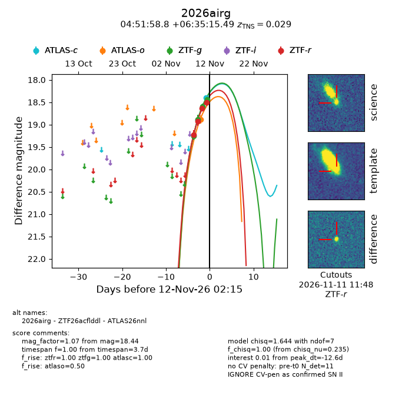
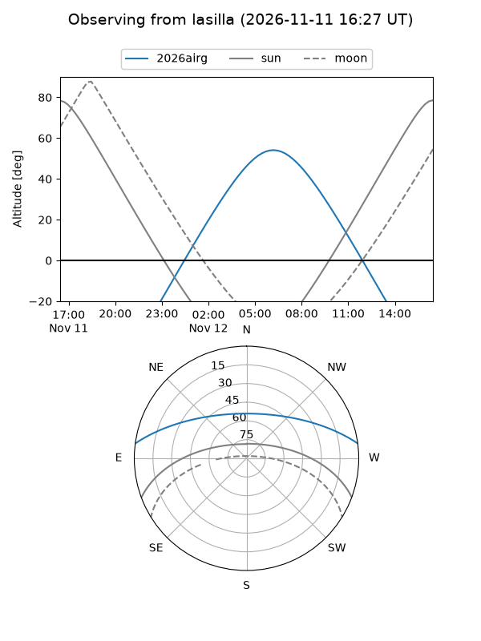
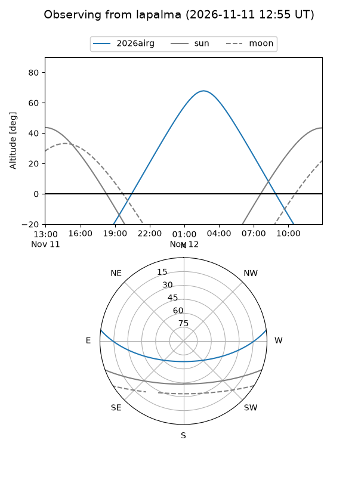
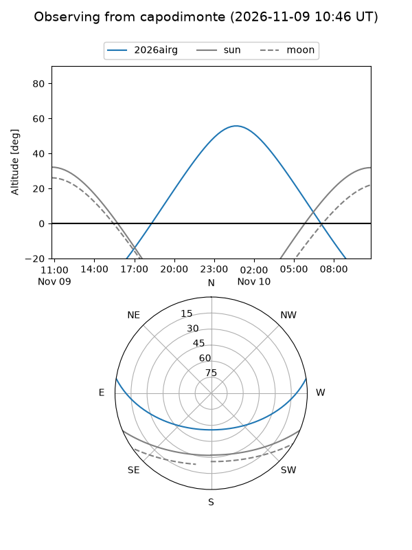
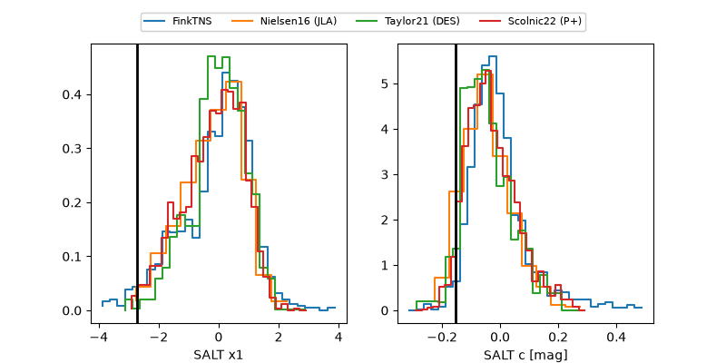

2026airg
Target 2026airg at 2026-11-12 02:17
Aliases and brokers:
FINK-ZTF: ztf.fink-portal.org/ZTF26acflddl
Lasair-ZTF: lasair-ztf.lsst.ac.uk/objects/ZTF26acflddl
ALeRCE-ZTF: alerce.online/object/ZTF26acflddl
YSE-PZ: ziggy.ucolick.org/yse/transient_detail/2026airg
TNS name: wis-tns.org/object/2026airg
Direct TNS query: direct search
alt names
ZTF26acflddl (ztf,fink_ztf)
2026airg (tns,yse)
ATLAS26nnl (atlas)
Coordinates:
equatorial (ra, dec) = 72.9952,+6.58764
equatorial (HMS+DMS) = 04:51:58.85,+06:35:15.49
galactic (l, b) = (192.1080,-22.82572)
Flags:
TNS type: SN II
TNS redshift: 0.0290
peak dt: -12.6
Photometry:
last atlasc=18.40, atlaso=18.89, ztfg=18.44, ztfr=18.50
2 atlasc, 1 atlaso, 4 ztfg, 4 ztfr detections
Lightcurve

Visibility



Additional plots
